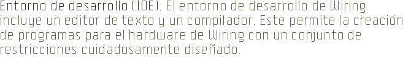
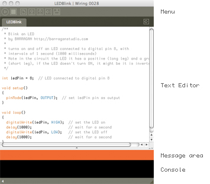
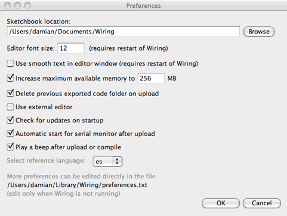

Entorno de Desarrollo de Wiring (PDE)
Preferencias del entorno de Wiring
Sketchbook
Pestañas, Multiples archivos, y Clases
Carga de Aplicaciones
Entorno de Desarrollo de Wiring
Hemos diseñado un editor simple de usar para escribir, compilar y cargar programas en el hardware de Wiring.
El Entorno Wiring (Entorno Integrado de Desarrollo o IDE)
tiene un editor de texto y un compilador de programas escritos para el hardware de Wiring o el hardware seleccionado. Cuando se oprime el botón "run", el programa se compila. La barra de herramientas provee funcionalidades para compilar
programas, crear un nuevo sketch, abrir, guardar y exportar al hardware.
Comandos adicionales están disponibles a través de los menús. El area de mensajes
da feedback cuando se guarda o exporta y también muestra las ubicaciones
de los errores cuando los programas son compilados. El area del texto (consola) muestra mensajes
del compilador, y el Serial Monitor puede enviar y recibir mensajes desde/hacia la tarjeta Wiring usandando la función de programación Serial.print()/Serial.read() en Wiring.

Los programas escritos usando Wiring son llamados sketches (bocetos). Estos sketches son escritos en el editor de texto. Tiene funciones para cortar/pegar y para buscar/remplazar texto. El area de mensaje da feedback mientras salva y carga y también muestra errores al compilar. La consola muestra textos de salida de los programas de Wiring incluyendo mensajes completos de error . El Serial Monitor puede mostrar textos de salida provenientes de los programas en Wiring al usar las funciones Serial.print() y Serial.println(), también es posible enviarle mensajes a Wiring y el programa que corre puede leerlos usando el comando Serial.read(). Los botones de la barra de herramientas permiten compilar, ver el diagrama del circuito electrónico del sketch, crear un nuevo sketch, abrir, salvar, cargar y abrir el Serial Monitor:
| Verifica / Compila :Verifica el código del sketch. | ||
| Esquemáticos: Abre una ventana con el esquema del circuito del sketch si está disponible. | ||
| Nuevo: Crea un nuevo sketch . En Wiring, los proyectos son llamados sketches. | ||
| Abrir: Selecciona y carga sketch pre-existente. Un menú se abre y puede elegir su propio sketchbook, ejemplos, o puede abrir un sketch desde cualquier lugar en su computador o red. | ||
| Guardar: Guarda el sketch actual en la carpeta de sketches de Wiring. Si se quiere dar un nombre al skectch diferente a la fecha actual, puede escoger guardar como desde el menú Archivo. | ||
| Cargar al hardware Wiring: Exporta el sketch actual al sketchbook y lo carga al hardware Wiring. El directorio contenedor de archivos es abierto. Hay más información acerca de carga más adelante. | ||
| Monitor Serial: Abre una conección al puerto serial para monitorear los datos entrantes desde el hardware Wiring, esto es muy útil para hacer debug y verificar. |
Comandos adicionales son encontrados en los cinco menús: File, Edit, Sketch, Tools, Help. Los menús son sensibles al contexto, lo que significa que solo aquellos elementos relevantes a la acción actual están disponibles.
File
- New (Ctrl+N)
Crea un nuevo sketch en una nueva ventana, llamado con la fecha actual en el formato "sketch_AAMMDDa". - Open (Ctrl+O)
Abre un sketch en una nueva ventana. - Open Recent
Muestra una lista de los sketches recientes y abre un sketch en una nueva ventana. - Sketchbook
Abre un sketch desde la carpeta sketchbook. - Close (Ctrl+W)
Cierra el sketch en la ventana más al frente. Si es el último sketch que se abre, se preguntará si quiere salir. Para evitar la pregunta, use Quit en vez de Close cuando quiera salir de la aplicación. - Save (Ctrl+S)
Guarda el sketch abierto en su estado actual. - Save as... (Ctrl+Shift+S)
Guarda el sketch actual, con la opcón de darle un nombre diferente. Esto no remplaza versiones previas del sketch. - Upload to wiring hardware (Ctrl+U)
Carga el programa en el hardware Wiring. - Page Setup (Ctrl+Shift+P)
(Sin funcionamiento aún) - Print (Ctrl+P)
(Sin funcionamiento aún) - Preferences (Ctrl+,)
Permite cambiar alguno modos como funciona Wiring. - Quit (Ctrl+Q)
Sale del Entorno Wiring y cierra todas las ventanas de Wiring.
Edit
- Undo (Ctrl+Z)
Devuelve el último cambio realizado o la última tecla pulsada. Cancela el comando Undo eligiendo Edit » Redo. - Redo (Ctrl+Y)
Devuelve la acción del último commando Deshacer. Esta opción está disponible solamente si ha habido una acción Undo. - Cut (Ctrl+X)
Remueve y copia el texto seleccionado al portapapeles (un buffer de texto no visible) - Copy (Ctrl+C)
Copia un texto seleccionado al portapapeles. - Copy as HTML (Shift+Ctrl+C)
Formatea el código de tal manera que aparezca en el Foro de Wiring del mismo modo que aparece en el Entorno Wiring y lo copia a la papelera de tal manera que puede ser pegado en cualquier lugar. - Peste (Ctrl+V)
Inserta el contenido de la papelera en la ubicación del cursor, y remplaza cualquier texto seleccionado. - Select All (Ctrl+A)
Selecciona todo el texto en el archivo que está abierto actualmente en el editor de texto. - Comment/Uncomment (Ctrl+/)
Comenta el texto seleccionado. Si el texto seleccionado está ya comentado, será descomentado. - Increase Indent (Ctrl+])
Mueve (indenta) el texto seleccionado dos espacios. - Decrease Indent (Ctrl+[)
Si el texto fue movido, remueve los dos espacios avanzados. - Find (Ctrl+F)
Busca una aparición de un texto incluido en el archivo abierto en el editor de texto y da la opción de reemplazarlo con un texto diferente. - Find Next (Ctrl+G)
Busca la siguiente aparición de un texto string incluido en el archivo abierto en el editor de texto.
Sketch
- Verify / Compile (Ctrl+R)
Verifica el código del sketch (compila el código) - Build (Ctrl+R)
Construye los archivos del sketch archivo .hex y archivos intermedios y los deja en la carpeta build en el folder del sketch - Schematics
Abre una nueva ventana con el circuito esquemático del sketch si está disponible. - Show Sketch Folder
Abre el directorio del sketch actual. - Import Library
Adiciona las declaraciones import necesarias en la parte superiro del sketch actual. Por ejemplo, seleccionando Sketch » Import Library » Encoder adiciona la declaración "#include <Encoder.h>" en la parte superior de la ventana actual. Estas declaraciones importadas son necesarias para usar las Librerías. - Add File
Abre el navegador de archivos. Seleccione archivos .cpp .h .c o y los mueve al directorio del sketch.
Tools
- Auto Format (Ctrl-T)
Intenta darle formato al código en la disposición humanamente más legible. Auto Format fue llamada previamente Beautify. - Archive Sketch
Archiva una copia del sketch actual en formato .zip. El archivo es ubicado en el mismo directorio como un sketch. - Fix Encoding and Reload
Los sketches que contienen caracteres no-ASCII pueden lucir extraños cuando son abiertos. Textos incompletos y caracteres raros pueden aparecer donde diéresis, cedillas, y caracteres japoneses habían antes. Esto recargará su sketch usando el mismo método que versiones anteriores de Wiring, en determinado punto puede guardar otra vez el que este escrito en una versión apropiada de UTF-8. - Serial Monitor (Shift+Ctrl+M)
Abre la ventana del monitor de Serial que permite monitorear datos enviados por el hardware de Wiring. Wiring detecta la velocidad del serial para usar en el monitor serial directamente del comando Serial.begin() en el sketch. También es posible seleccionar la velocidad manualmente del menu en la ventana del monitor serial.
- Board
Muestra una lista de tarjetas Wiring y otras producidas por terceros como Arduino o las que el usuario haya instalado. - Serial Port
Permite seleccionar cual puerto serial será usado por defecto para cargar un código en el hardware de Wiring o monitorear datos provenientes de él. Los datos provenientes del harware Wiring son impresos en formato caracter en el area de texto del Monitor Serial. - Burn Bootloader
Permite instalar un archivo de bootloader en una tarjeta, muestra una lista de programadores disponibles.
Window
- Menu para moverse entre los sketches abiertos.
Help
- Getting Started
Abre la referencia del Entorno Wiring en el Navegador Web por defecto. - Examples
Abre el menú de los ejemplos incluidos con Wiring. El contenido de este menu cambia dependiendo del hardware seleccionado. Hay ejemplos Básicos y por Tópicos, que corresponden a los ejemplos del API básico de Wiring. Ejemplos Multi-plataforma los cuales son de las librerías multi-plataforma (librerías que no dependen del hardware), Core que vienen de las librerías Core, (librerías para el core usado por el hardware seleccionado), y Contributed que son ejemplos de las librerías instaladas en le folder libraries en su Sketchbook. - Environment
Abre la información del entorno de Wiring en el Navegador Web por defecto. - Reference
Abre la referencia de Wiring en el Navegador Web por defecto. Incluye la referencia del Framework de Wiring, ambiente de programación, librerías, ejemplos y hardware en el idioma seleccionado en Preferences. - Find in Reference (Ctrl+Shift+F)
Seleccione una palabra en su programa presione el botón derecho del mouse y seleccione "Find in Reference" para abrir la referencia del comando selccionado en el Navegador Web por defecto. - Wiring hardware
Abre la referencia del hardware en el Navegador Web por defecto. Incluye diagramas, esquemas y comparación con otros hardware. - Frequently Asked Questions
Respuestas a algunas preguntas básicas sobre el proyecto Wiring. - Troubleshooting
Abre información troubleshooting en el Navegador Web por defecto. - Visit Wiring.org.co (Ctrl+5)
Abre en el Navegador Web por defecto la página principal de Wiring.org.co. - About Wiring
Abre un panel con información consisa sobre Wiring.
Preferencias
Es posible seleccionar algunas preferencias desde el editor. La ventana de diálogo permite rapidamente cambiar algunas preferencias útiles asà como un link directo para editar el archivo de preferencias y hacer cambios detallados.
El diálogo de preferencias incluye estas opciones: Tamaño de la letra del editor, texto suavizado, máxima memoria asignada a la aplicación, borrar el código previamente exportado cuando se carga uno nuevo, usar un editor externo, revisar si hay actualizaciones, inicio automático del monitor serial despues de hacer upload, sonar un beep despues de cargar o compilar un programa (dos beeps sonarán si se encuentra un error), seleccionar el idioma de su preferencia para la referencia y un link al archivo preferences.txt en el sistema.

Sketchbook
Todos los proyectos de Wiring son llamados sketches. Cada sketch tiene su propio
directorio (carpeta) y dentro de ella hay un programa principal el cual tiene
el mismo nombre que el sketch. Por ejemplo, si el nombre del sketch es
"Sketch_123", el directorio se llamará "Sketch_123"
y el archivo principal se llamará "Sketch_123.wiring" (o "Sketch_123.pde").
Los Sketches necesitan otros directorios dentro para contener archivos código
adicionales. Cuando un sketch es cargado, todos los archivos son exportados en un archivo .hex con el mismo nombre
del sketch. Por ejemplo si el sketch es nombrado "Sketch_123",
el archivo exportado será llamado "Sketch_123.cpp.hex"
Los Sketches se mantienen en el directorio Wiring, el cual estará
en una ubicación diferente en su computador o red (Mis Documentos o Documentos), dependiendo si está usando PC, Mac, o Linux
y como están asiganadas sus preferencias. Para ubicar este directorio, seleccione
la opción "Preferences" el en menú "File".
Es posible tener multiples programas divididos en un sketch. Cada
una de estas divisiones es visible con una pestaña en el área baja del menú. Cuando
un programa es compilado estas divisiones son hechas en un archivo y compilado
como un solo programa. Las divisiones pueden ser también separadas en archivos de C++ (la extensión es
.cpp) los cuales son compilados junto con los archivos de Wiring. Para adicionar una
nueva división, click en la flecha a la derecha de las pestañas. Puede escribir
la funciones y clases en una nueva división y puede escribir cualquier código en C o C++
en archivos con la extensión .c, .cpp y .h.
Tabs, Archivos múltiples, y clases
Puede ser un inconveniente escribir un programa muy largo incluido en un mismo archivo. Cuando los programas crecen a cientos o miles de líneas, dividirlos en unidades modulares ayuda a manejar las diferentes partes. Wiring maneja archivos con el Sketchbook y cada sketch puede tener multiples archivos que son administrados en pestañas. El botón flecha en la esquina superior derecha del Entorno de Desarrollo Wiring es usado para administrar estos archivos. Click en este botón para revelar las opciones para crear una nueva pestaña, renombrar la pestaña actual, o borrar la pestaña actual. Si un proyecto tiene más de una pestaña, pueden ser ocultadas y reveladas. Escondiendo una pestaña temporalmente remueve ese código del sketch (este no será compilado con el programa cuando el botón Verify/Compile sea presionado).
Las pestañas son previstas para usuario avanzados, y por está razón, el menú que controla las pestañas es fué hecho menos prominente.
Para programadores familiarizados con C/C++. Cuando un programa con multiples pestañas es compilado, el código es agrupado. Cuando un archivo .cpp .h o .c es adicionado, son copiados en la carpeta del sketch y son compilados cuando el sketch es compilado pero no son preprocesados (errores en este tipo de archivos no serán en algunos casos identificados claramente en la línea actual del archivo). Use esta característica para desarrollar nuevas librerías o clases dentro de un proyecto y hacer una prueba inmediata.
Application Upload
Upload crea una versión del sketch que puede correr dentro del hardware de Wiring.
Cuando un código es cargado desde Wiring, el preprocesador agrega los prototupis de las funciones y los includes necesarios para generar un archivo con código C++ y
luego es compilado. Cuando un proyecto es cargado en el hardware, una serie de
archivos son escritos en un directorio "build" el cual es creado
dentro del directorio del sketch. Si el sketch es llamado "Sketch_123",
el directorio build contiene entre otros archivos lo siguiente:
Sketch_123.cpp.hex
El archivo binario HEX contiene todo el código necesario para que el sketch corra en el hardware Wiring. Incluye
el código de Wiring también como las personalizaciones del sketch.
Sketch_123.cpp
El archivo de C++ genera por el pre-procesador desde el archivo PDE. Este es
el archivo actual el cual es compilado en un archivo HEX por avr-g++, el compilador de C++
usado por Wiring para el core AVR8.
Sketch_123.wiring (o Sketch_123.pde)
El archivo del programa original.
Cada vez que el sketch es cargado, todos los archivos anteriores son re-escritos.
Cuando un sketch es cargado, todos los archivos (incluyendo aquellos en la carpeta del sketch y las librerías del usuario del sketchbook) son empaquetadas en un archivo .hex.